The Psychoacoustics of Phase
Presented to AES Chicago
by Jon Boley
29 January, 2014
Topics
- The Basics
- Useful Applications
- A Note on Phase/Group Delay
- Classic Experiments in Perception
- Recent Advances in Psychoacoustics
The Basics...
Definition of Phase
Assume we have a periodic signal (e.g., sine wave) 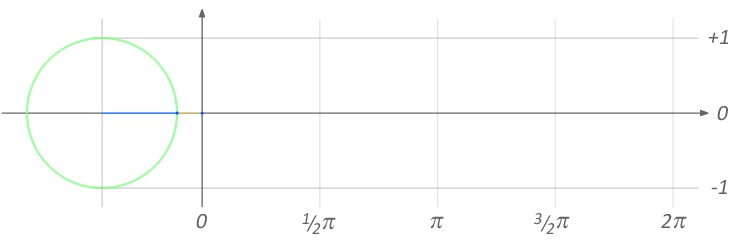
The phase is simply the position
in degrees or radians
...or even Hz×seconds
Phase Shift
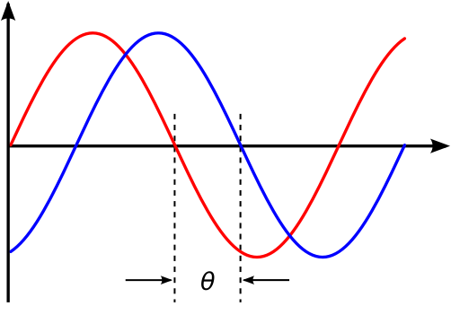Altering the Phase
We could...
- Start the signal at a different point
- Hit "play" sooner/later
(less/more silence before starting) - Move the loudspeaker closer to (or further from) the measurement point (distance ∝ time)
- Electronically "filter" the signal
Interference
The instantaneous pressure of 2 or more signals can interact
(contructive & destructive interference)

Useful Applications...
Comb Filter
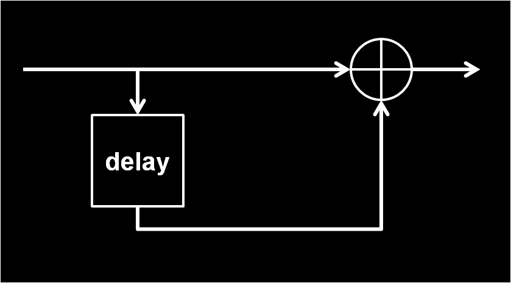
General FIR Filter
e.g., to model reflections off surfaces (simple reverb)
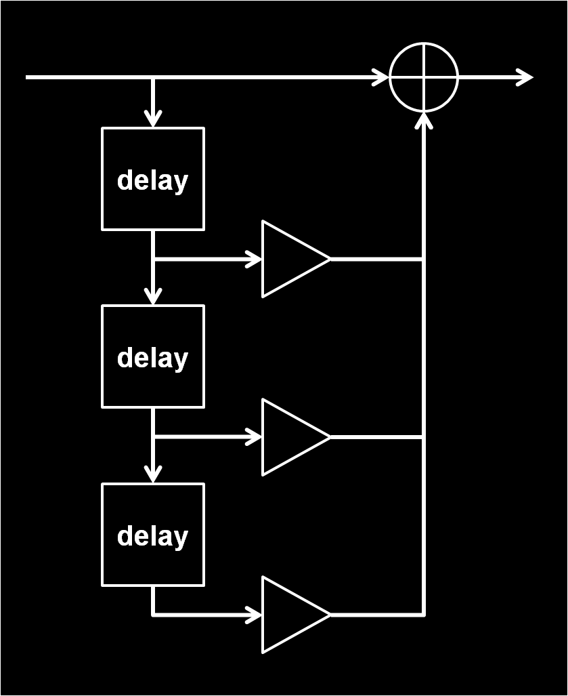
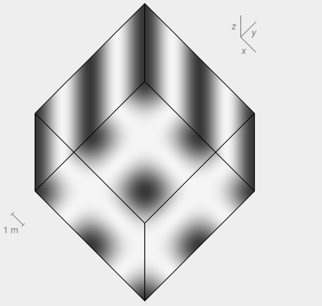
- Can be designed to achieve almost any desired frequency response
Active Noise Cancellation
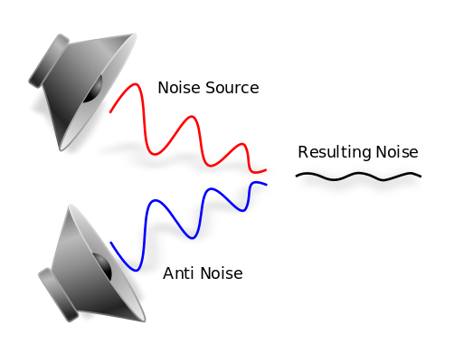
A Note on Phase/Group Delay...
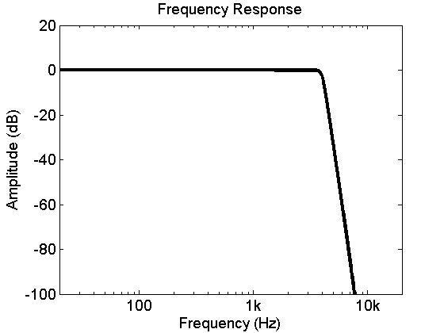
Phase Response
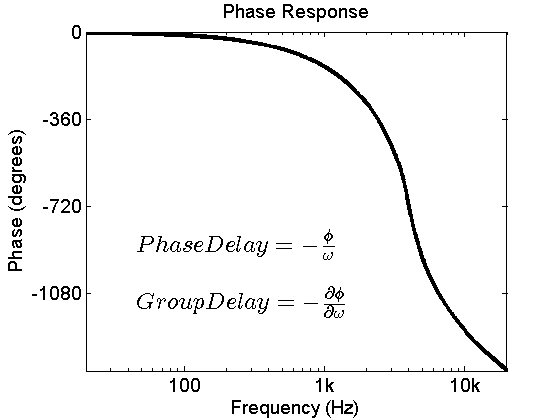
Phase/Group Delay
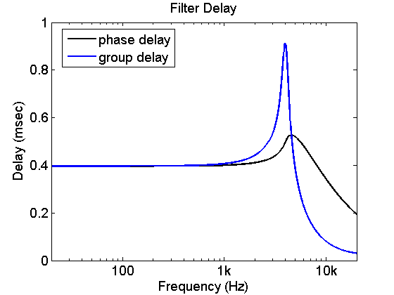
Waveform Delay
(4kHz tone modulated at 500Hz) 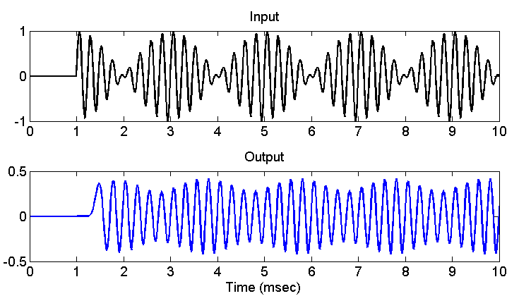
Phase Delay -vs- Group Delay
- Phase delay is the delay for a tone at a specific frequency
- Group delay
- If phase is approximately linear, group delay can be thought of as the delay of the signal envelope
- Note: if slope of the phase response briefly turns positive, the group delay is negative in that region...
but time travel does not actually occur
Classic Experiments in Perception...
Interaural Time Differences
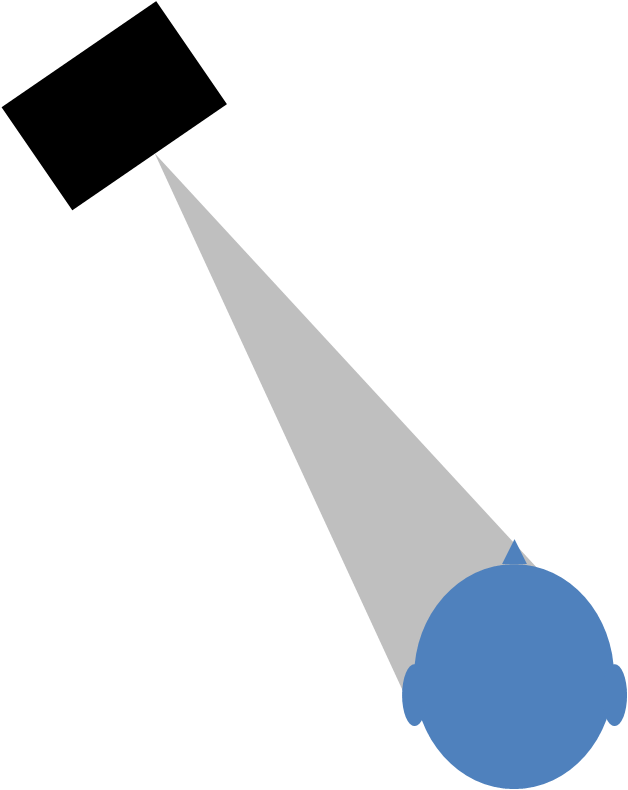
Critical Bands
Within a critical band, it is easier to detect AM.
But outside, phase doesn't matter.
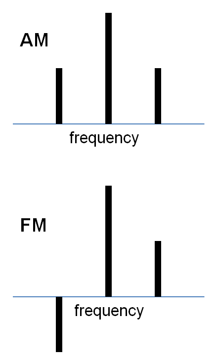
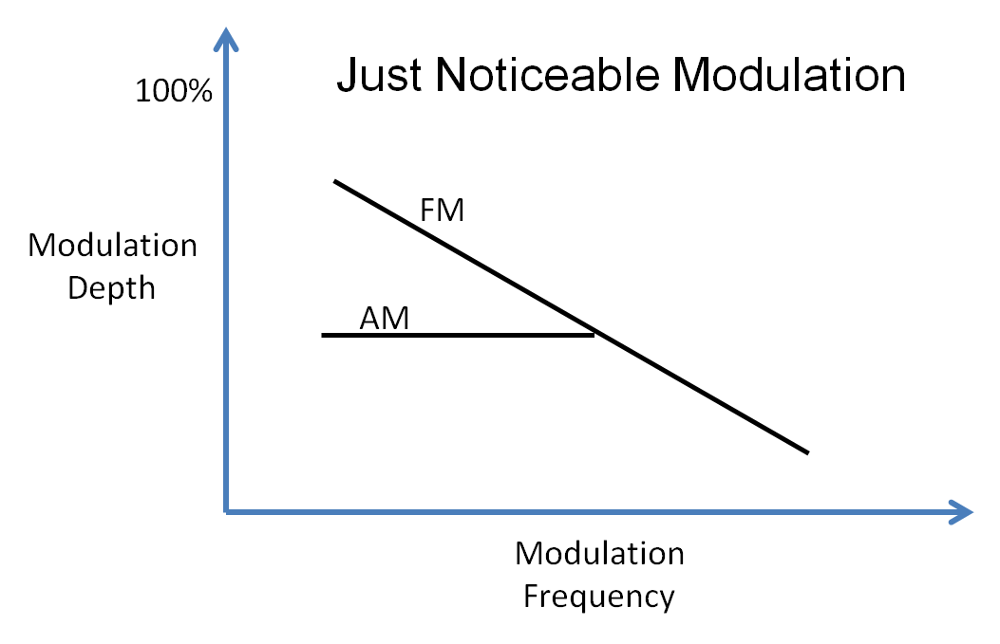
Zwicker, E., Flottorp, G., & Stevens, S. S. (1957). Critical band width in loudness summation. The Journal of the Acoustical Society of America, 29, 548.
Detecting Phase Differences
Affected by relative level & frequencies present
As Zwicker & Fastl note, phase changes often manifest as:
- modulated envelope
- modulated frequency
Pitch
>30 degrees offset for a single component in a harmonic complex results in a new auditory stream
Kubovy, Michael, and Ray Jordan. "Tone-segregation by phase: On the phase sensitivity of the single ear." The Journal of the Acoustical Society of America66 (1979): 100.
Binaural Pitch
Play noise in both channels,
but delay a narrow frequency range in one channel
Guess that tune!
This demo only works well with headphones
Recent Advances in Psychoacoustics...
Loudness
Heinz et al (2001) built a computer model to predict level discrimination at different frequencies.
It better predicted human performance when across-frequency neural timing was accounted for.
Masking
People can easily detect a tone in noise, and typical masking models do not match this ability.
Carney et al (2002) showed that a model that compared the phase across neighboring auditory filters can explain human performance.
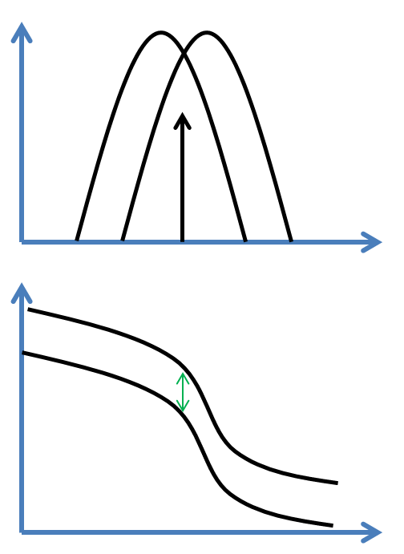
Localization
Joris et al (2006) showed that some of the internal delay may come from phase differences in the cochlea.
Pitch
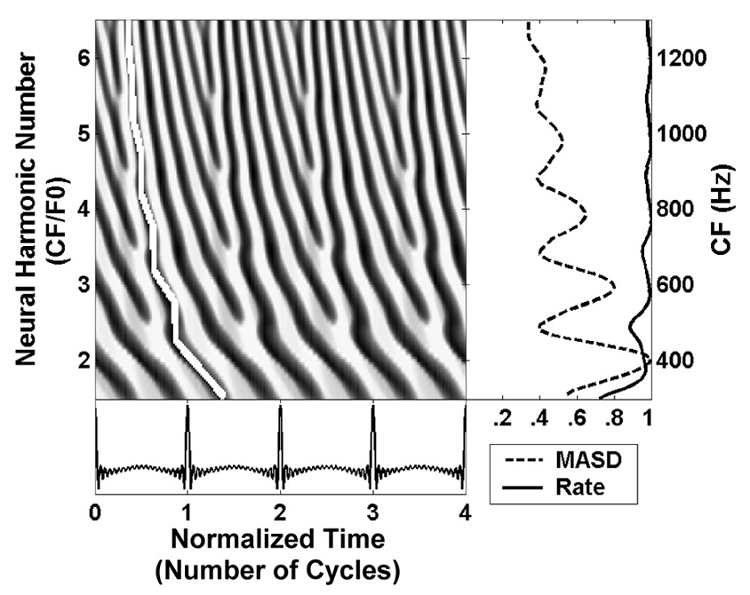
reproduced with permission from Cedolin and Delgutte (2010)
For multiple simultaneous pitches:
Larsen (2008) showed that neural rate is useful for F0>900Hz
but for F0<900Hz, this 'spatio-temporal' derivative is more accurate
Speech
- Shamma (1985) suggested that the rapid phase shifts might be important for speech perception
- Heinz (2007) showed that these phase shifts could accurately encode speech buried in noise
- Boley (2013) showed that cochlear nonlinearities increase the phase shift around the second formant of a vowel. (This disappears with hearing impairment.)
Neural Phase Detectors
Neurons in the cochlear nucleus are sensitive to changes in the phase spectrum
... leading to improved localization?
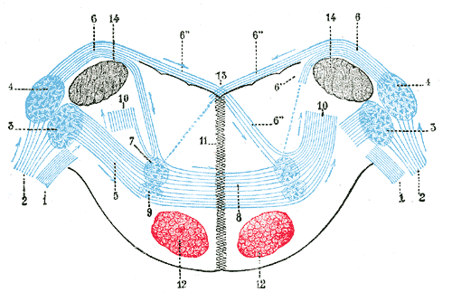
Wang, G. I., and Delgutte, B. (2012). Sensitivity of Cochlear Nucleus Neurons to Spatio-Temporal Changes in Auditory Nerve Activity, Journal of Neurophysiology, 108, 3172-3195
A Few Quotes...
The claim that the ear is "phase deaf"Laitinen, Mikko-Ville, Sascha Disch, and Ville Pulkki. "Sensitivity of Human Hearing to Changes in Phase Spectrum." Journal of the Audio Engineering Society 61.11 (2013): 860-877.
was already suggested by Ohm [1843],
and Helmholtz [1863] came to the same conclusion in his tests.
Time-domain behavior... is not a serious factor, as humans are very insensitive to phase shift. Only very large group delays - larger than occur in normal loudspeaker designs - are audible, and even then normal listening room acoustics make the differences even more difficult to hear.Floyd Toole
Lipshitz, Stanley P., Pocock, Mark, and Vanderkooy, John, "On the Audibility of Midrange Phase Distortion in Audio Systems,' J. Audio Eng. Soc., Vol. 30, No, 9, Sept. 1982, pp 580-595.
- Even quite small midrange phase nonlinearities can be audible on suitably chosen signals.
- Audibility is far greater on headphones than on loudspeakers.
- Simple acoustic signals generated anechoically display clear phase audibility on headphones.
- On normal music or speech signals phase distortion appears not to be generally audible, although it was heard with 99% confidence on some recorded vocal material.
Conclusions
- Phase can be very important, and can result in very audible changes
- Phase itself can be audible, but you may have to listen very carefully
- Phase information may be an important contributor to the cocktail-party effect
References
- Boley, J. (2013). The Effects of Hearing Aid Amplification on Robust Neural Coding of Speech. Dissertation, Purdue University.
- Cedolin, L., & Delgutte, B. (2007). Spatio-temporal representation of the pitch of complex tones in the auditory nerve. In B. Kollmeier, G. Klump, V. Hohmann, U. Langemann, M. Mauermann, S. Uppenkamp, & J. Verhey (Eds.), (pp. 61-70). Berlin: Springer-Verlag.
- Cedolin, L., & Delgutte, B. (2010). Spatiotemporal representation of the pitch of harmonic complex tones in the auditory nerve. Journal of Neuroscience, 30(38), 12712-12724.
- Cheveigné, A. de, & Pressnitzer, D. (2006). The case of the missing delay lines: Synthetic delays obtained by cross-channel phase interaction. Journal of the Acoustical Society of America.
- Deng, L., & Geisler, C. D. (1987). A composite auditory model for processing speech sounds. Journal of the Acoustical Society of America, 82(6), 2001-2012.
- Heinz, M. G., Colburn, H. S., & Carney, L. H. (2001). Rate and timing cues associated with the cochlear amplifier: level discrimination based on monaural cross-frequency coincidence detection. Journal of the Acoustical Society of America, 110(4), 2065-2084.
- Heinz, M. G. (2007). Spatiotemporal encoding of vowels in noise studied with the responses of individual auditory nerve fibers. In B. Kollmeier, G. Klump, V. Hohmann, U. Langemann, M. Mauermann, S. Uppenkamp, & J. Verhey (Eds.), Hearing-From Sensory Processing to Perception (pp. 107-115). Heidelberg: Springer Verlag.
References
- Joris, P. X., de Sande, B. Van, Louage, D. H., & van der Heijden, M. (2006). Binaural and cochlear disparities. Proceedings of the National Academy of Sciences, 103(34), 12917-12922.
- Laitinen, Mikko-Ville, Sascha Disch, and Ville Pulkki. "Sensitivity of Human Hearing to Changes in Phase Spectrum." Journal of the Audio Engineering Society 61.11 (2013): 860-877.
- Larsen, E., Cedolin, L., & Delgutte, B. (2008). Pitch representations in the auditory nerve: two concurrent complex tones. Journal of Neurophysiology, 100(3), 1301-1319.
- Lipshitz, Stanley P., Pocock, Mark, and Vanderkooy, John, "On the Audibility of Midrange Phase Distortion in Audio Systems,' J. Audio Eng. Soc., Vol. 30, No, 9, Sept. 1982, pp 580-595.
- Loeb, G. E., White, M. W., & Merzenich, M. M. (1983). Spatial cross-correlation. A proposed mechanism for acoustic pitch perception. Biological Cybernetics, 47(3), 149-163.
- Shamma, S. A. (1985). Speech processing in the auditory system. I: The representation of speech sounds in the responses of the auditory nerve. Journal of the Acoustical Society of America, 78(5), 1612-1621.
- Shamma, S., & Klein, D. (2000). The case of the missing pitch templates: how harmonic templates emerge in the early auditory system. Journal of the Acoustical Society of America, 107(5 Pt 1), 2631-2644.
- Wang, G. I., & Delgutte, B. (2012). Sensitivity of Cochlear Nucleus Neurons to Spatio-Temporal Changes in Auditory Nerve Activity. Journal of Neurophysiology, 108, 3172-3195.